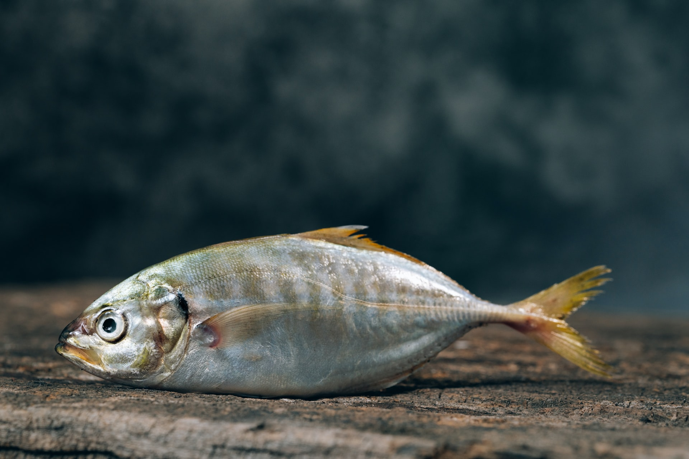

Fish Haven, Idaho

Currently:
Humidity:
Wind Speed:
Wind Chill:
Five Day


Article Title

fish heaven is literally a Haven for fish . you know that saying that All Dogs Go To Heaven? well, the same thing is true for fish.
Except they don't go to heaven, they go to Fish Haven. the history of Fish Haven is a long and arduous history filled with hardships love and mystery and tears.
it all starts in 1742 great Isaac trout decided to create a safe place for fish to reside. unfortunately the great irony is that Isaac trout was caught in a
hook and 1761. It was then shortly gutted thereafter. luckily he had many people to carry on his vision to create a Haven for fish. is a. When on and more
people came Westward many people decided to settle down in Fairhaven but they noticed that there weren't that many fish there but that's because they weren't
on the land of course! They were under the water! now Haven had a period of time human fish quite a few scuffles. it was the great salt brine accident of 1802
the hijinx of 1931. Oh, and who could forget the draining of the lake in 2004. but now the fish rule over all the people on Fish Haven yes that's right Fisher
the rulers and man are the peons.
UC after Isaac trout was gutted, lots of fish were very angry at the people. So they decided rise up and Revolt. But they weren't able to go up on the land.
they had to devise a plan. one long series of meetings and conferences that really lit up to very little except for a single conclusion. they had to invent
a machine that would allow them to breathe on dry land. Unfortunately oh, there was no fish smart enough to do this job for quite a while. , the fish
waited and waited if they waited on the World to Change. help them create a machine that would help them breathe on the dry land.
So the had to keep on waiting and waiting for a fish who was smart enough to invent such a contraption.
Fortunately, as luck would have it they had good fortune come their way. Not good fortune came reform of Thomas salmonson. Salmonson with a fish from
Europe who migrated through all the oceans and rivers to get to Fish Haven. salmonson was a very smart fish and he was able to invent the machine that they
needed. sure, it took some trial-and-error but eventually he and all the other fish were able to enjoy this machine that allowed the breath on the dry land.
unfortunately, this is where the great plot twist I didn't know that the fish were going to go up onto dry land to no he thought they were just going up there
to expand their great civilization destroy the humans. this caused quite an outbreak in a civil war amongst the fish Community with the peacemakers on one side
and the warmaker's on the other. salmon said decided to leave the peacemakers and try and convince the rest of the fish people that they needed to create a
Community centered on peace. many of Trouts ancestors were on the warmaker side trying to convince others that they needed to rise up and get Vengeance for
their father's deathhis Civil War went on for an entire decade and a half before any real resolution came eventually a conclusion and consensus made that
well they needed to stop the humans from the atrocities that were committed against fishkind that they themselves will not commit atrocities themselves.
And so in conclusion reached the fish went up onto dry land triumphant in there waddling. they rounded up all the nearby humans and told them that they needed
to get out of the land and that this was now a country for fish. And that humans have no place there. there is much contention between the fish and the humans
tension started to boil and another small war broke out what was much shorter than the Civil War in someone's the fish. in time all the humans were cast out
of Fish Haven and that's how Haven became the Haven for fish a place free from Human interference. And now you know.